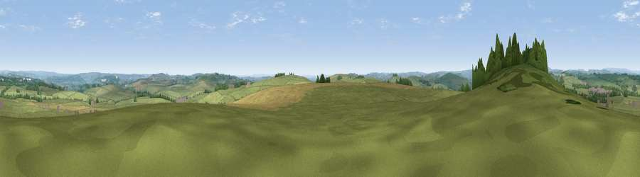

Viewpoint near Biggin
#10966 in England · top 11% of its area beats it · near Biggin · path 206 mWhere it is
The exact computed spot (SK 17475 59475). Click the marker for map links.
Public access: the nearest public right of way is about 206 m away — the final stretch may cross private land. Computed from Natural England's CRoW access layer and OpenStreetMap rights of way — not the legal definitive map. Always verify locally.
The view, rendered

A 360° render of this exact spot computed from the terrain model, tree cover and land cover — summer colours, afternoon light, calibrated against photographs of famous viewpoints. Real trees, hedges and buildings will differ in detail.
The panorama
Grey silhouette: terrain skyline in each direction (720 bearings, Earth curvature and refraction included). Dashed green: skyline with trees (+15 m) and buildings (+8 m) as obstacles. Blue strip: how far the ground is visible on each bearing.
Where the view opens
Wedge length = distance to the farthest visible ground on that bearing (vegetation-aware). Rings at 10, 25 and 50 km.
What fills the view
79% grassland · 11% cropland · 8% woodland ·
Angular shares of the visible panorama (visual magnitude), not map area. Landscape diversity 0.30 (0–1 Shannon).
Key numbers
More beautiful places nearby
The staircase of upgrades: each row has a higher view potential than everything closer. Driving times are estimates from straight-line distance, calibrated against real road routing — check an actual route before setting out.
| Place | Direction | Drive | Score |
|---|---|---|---|
| Viewpoint near Alsop en le Dale | S · 3 km | ~7 min | 63.6 |
| Viewpoint near Biggin | WSW · 4 km | ~9 min | 65.6 |
| Tissington Hill | SSW · 7 km | ~15 min | 75.5 |
| Viewpoint near Mow Cop | W · 31 km | ~49 min | 78.9 |
| Viewpoint near Mow Cop | W · 32 km | ~49 min | 80.2 |
| Viewpoint near Harthill | W · 66 km | ~89 min | 80.5 |
| White Brow | NW · 74 km | ~97 min | 82.9 |
| Viewpoint near Little Wenlock | SW · 74 km | ~98 min | 84.2 |
53.13215, -1.74027 · source: screening · position refined by local search. Computed location — check access rights before visiting.